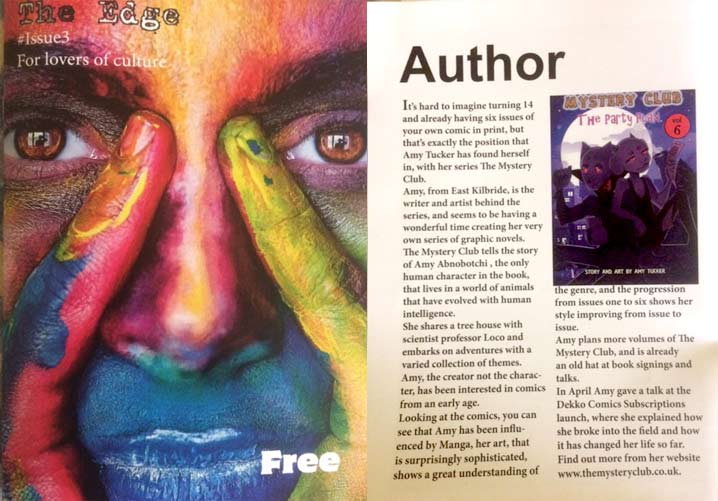

Latest News & Reviews
Keep up to date with what's been happening in the Mystery Club world. send an email to amytuckart@gmail.com
Watch my Wigtown Festival workshop
I was asked to present a workshop at the Wigtown Book Festival. Because of recent events it was moved to an online workshop. You can watch it below.
Watch my Comic Book Workshop
Wigtown Book Festival Online Workshop
Amy Tucker
Wednesday 13 May 2020
4.30pm UK, via Zoom
Sign up here.
The award-winning author and illustrator of the comic book series Mystery Club, Amy Tucker, joins us online to discuss the ever-changing industry, how to get started and develop your work to the level required for publishing. Learn what it takes to design and produce engaging, creative and unique comics, Amy will be discussing everything from character creation to dialogue.
Selected as BBC Newsround Inspirational Kid and Young Scot Awards Arts Winner 2018, she has been producing and publishing her novels for over 4 years, since she was just 11. Her comics are sold in both major national retailers and by independent stores, and her work is also on display in the Scottish Parliament.
Find out more about Amy’s work at www.mysteryclub.co.uk.
Children and young people are welcome and encouraged to participate in this session but registration must be completed with the permission of a parent or guardian. Please be aware of online security when registering and signing in. We recommend not displaying your full name, and instead selecting a screen name (made up name) for the event. The event will be set to speaker view. Cameras will remain switched off for the duration so that only your screen name is visible to the host.
Support our new digital programme
Like many charities and arts organisations we are trying our best to provide interesting content and a new digital programme for our audience and supporters. If you would like to donate towards our ongoing work we would be very grateful.
My latest Comic Book Workshop
A big thanks to all those who took part in my latest comic book workshop.
Meeting Nicola Sturgeon

I was at a Reception held in Edinburgh Castle. It was a celebration of the winners of the Young Scot 2018 awards. I met and chatted with The First Minister of Scotland.
Camglen radio interview
I was in the Rutherglen news
Thank you so much to Niki Tennant from the Rutherglen Reformer and East Kilbride News for this amazing article
Create your own comic workshop

Thank you to the Cellar Southside for inviting me to present my comic book workshop for children aged 7-12. I hope everyone had a good time and learnt lots.
Geekaboo free comic book weekend 2019
Thank you to Geek aboo for inviting me into their store on free comic book weekend It was great to see Rossie Stone from Dekko Comics there.
Dunfermline Comic Con 2019

Come see me at the Dunfermline Comic Con. Sat 30 Mar 2019 10:00 am - 5:00 pm Pittencrieff Park, KY12 8QH buy tickets here
Cat Gibson interviews local comic artist Amy Tucker about meeting the First Minister
Guess who I met...
Oh you know, just the usual, meeting the leader of a country ‘n’ giving her a comic I made! Wow! Pretty insane and amazing, I was invited to the Year of Young People end of year event and I had the pleasure of meeting the first minister of Scotland there, it was incredible! I was asked to design a poster for the First Minister which will be hung in the Scottish Parliament.
I won !!!
I won the Young Scot award for the Arts category 2018. I collected my award at the SEC Theatre in front of the First Minister for Scotland and an audience of around 3000. A big thank you to everyone involved in awarding me with this great prize. Here is a link to the Daily Record newspaper article.
This is the video they showed on the night as they announced that I had won.
RaiCon 2018 (autumn)
Thank you, once again, to all the people I met and to those that bought a copy of the Mystery Club Comic.
Mystery Club in the local news
Look - I was in the local newspaper! That's me in the Rutherglen Reformer.
Rutherglen comic book workshop 2018
Thank you so much to Gemma Cannon from Healthy n Happy at No. 18 for inviting me to take a comic book workshop. And a big thank you also to all the children who took part.
Young Scot 2018 Finalist !!!
BIG NEWS!!! I am a Young Scot 2018 finalist. I have made it to the top 3 in the Arts category, and here I am in the Sunday Mail newspaper to prove it. The awards ceremony will take place in the Secc, Clyde Auditorium on Fri Nov 30th.
Camglen Radio Interview 2018
Camglen Radio is a local station in the Rutherglen and Cambuslang area. I was invited along to talk about The Mystery Club.
ECAF - Edinburgh Comic Art Festival
Thanks to all the people at the Edinburgh Comic Art Festival 2018 for saying hello and buying a copy of The Mystery Club.
Edge Magazine Review
Year of Young People 2018 Interview
I was recently invited to Edinburgh to do an interview with Young Scot The Year of Young People 2018 aims to inspire Scotland through its young people, celebrating their achievements.
Children's Hospital Workshop
Graham Campbell from the Geek-aboo comic book shop in Glasgow invited me, along with Neil Slorance (Dungeon Fun) and Tom Foster (2000 AD) to give a comic book workshop at the Queen Elizabeth University Hospital.
Glasgow Gaelic School
Thanks to Miss Doyle and to Rossie Stone of DekkoComics for inviting me to speak to the pupils of the Glasgow Gaelic School.
East Kilbride Comic Con
I was recently invited to take a comic book workshop at East Kilbride Comic Con I had a great time teaching children how to create their own comic books A big thank you to everyone who took part
Spring Rai Con 2018
A big thank you to everyone who came to say hello at the latest Rai Con. And an extra big thanks to all that bought a copy of The Mystery Club.
My Comic Book Talk - Apr 2018
I recently gave a talk at the Dekko comic subscription launch about my experience of comics and what its done for me. dekkocomics.com
Thank you to everyone who bought a copy of The Mystery Club.
Mystery Club Review and Interview
Carl Doherty is a comic book blogger with a focus on creator-own titles. I have just had a great review and interview with him. You can read it here... www.shelfabuse.com
Here is a quick extract from the article...
Mystery Club is set in a surreal world in which sole human girl Amy Abnobotchi shares a tree house with a host of anthropomorphic animals, including “renegade scientist” Professor Loco and the manipulative Tiger Streak. It’s funny and original, with a heartfelt but not slavish manga influence and a sense of playfulness throughout.
read the full article here... www.shelfabuse.com
Mystery Club Comics on Sale at Geek-aboo
Buy your copy of the Mystery Club from Geek_aboo
Dekko Volume 4 Launch Party - Nov 2017
Recently I took a trip to Stafford to attend the Dekko launch party for volume 4. There I gave a talk to children of St Andrews Primary School about being a part of the comic book community. Thank you to all the people who bught a copy of the Mystery Club comic.
Rai Con - Oct 2017
Thanks to all the people who bought a copy of the Mystery Club at this years Autumn Rai Con 2017.
Ben M. author of the 'Ozzy The Dog' book series reviews the Mystery Club
My name is Ben M. I am a young self-published Scottish author (just like you!) of the 'Ozzy The Dog' book series (my website: http://benmauthor.simplesite.com), I recently purchased your first graphic novel/comic 'Mystery Club: Festival' and just finished reading it. I would like to leave with you my review of the book and would like to ask if you could review my book also (the e-book version): https://www.smashwords.com/books/view/718104 Mystery Club - Festival by Amy Tucker
I am a massive fan of comic books such as Adventure Time and The Simpsons and upon browsing A1 Toys store recently I came upon Mystery Club - Festival by Amy Tucker. Amy Tucker is an artist I had never heard about before and the comic sounded and looked fantastic so I purchased it! I do not regret anything.
Mystery Club - Festival is a hillarious comic about a girl named Amy Abnobotchi, who is ten years old. Amy doesn't live in our world though, instead one where animals can talk! She lives with a scientist named Professor Loco and they travel to a festival where different clubs meet, meeting a very cute cat and a mysterious tiger.
When reading the book I couldn't help but think of it as an anime-like version of Adventure Time mixed with a little bit of Alice In Wonderland (cats, caterpillars!) which is great! The story is absolutely bonkers which is what makes the comic so funny and original. The artwork is outstanding... what's even more outstanding though is the fact that this comic was drawn and written by... a 12 year old girl (my age!) and is better than some of the big-name comics currently on shelves.
Overall, Mystery Club - Festival is a highly recommended (bonkers!) read for children of all ages which is sure to put a smile on your face!
Mystery Club - Festival gets *****!
Yours Sincerely,
Ben.
Big Comic Page reviews the Mystery Club

The following review is taken from the bigcomicpage.com
Self-published series “Mystery Club” introduces us to Amy Abnobotchi, a ten-year-old girl living in a fantastical world alongside aliens, talking animals and other curious characters of all shapes and sizes. Throughout the course of these four volumes, we get to see Amy and her rather odd group of friends (and frenemies) attending the world famous ‘Club Festival’, meeting celebrities and doing their best to solve any mysteries they stumble upon. It’s charming, fun and lively throughout, and it’s easy to see the enthusiasm of its creator – twelve year old Amy Tucker – bursting through in practically every page.
Let’s face it, most of us will have doodled some crazy characters on scraps of paper in our time, and some of us may have even taken the time to come up with little stories featuring them. But for a twelve-year-old to put such an incredible amount of effort into creating not one, not two, not three but four volumes of this series makes me, a lifelong comic book fan, feel all warm and fuzzy inside. Oh, and a little bit ashamed that I didn’t have the work ethic to do something similar myself when I was younger.
Younger readers will get a kick out of the humour on display here, with grumpy, comically violent Amy reacting badly to any perceived criticism or doubting of her “cuteness”, and all manner of quirky, Adventure Time-esque shenanigans taking place throughout the course of the series.
For the full review - click here
Rai Con - 2017

This is me at the Spring Rai Con 2017. I was selling my Mystery Club books at this Manga and anime convention.
TeamGirl Web Comics
I recently had my work published with the fantastic Glasgow-based comic "Team Girl". They highlight female comic book artists. They put me in their newest web comic. November 2016 - Space
Guess who was on TV
Here I am on STV Live at Five talking about my Mystery Club Comic Book
East Kilbride youngster celebrates winning top prize in national art competition just months after launching her debut comic book
Here I am winning second place in the John Byrne National Drawing Competition. The competition was entered by over 4000 school children in Scotland from P4 to secondary school pupils, and my work is now on display at Paisley Museum and Art Gallery.
Amy Tucker signs copies of her Mystery Club book at Waterstones
Here are some pictures from my recent book signing at Waterstones. The picture on the top right is me meeting Alex Gray the author of many Glasgow based crime novels.
Indie Comic Review: Mystery Club Festival - by Dominic Kelly
The following text was written by Dominic Kelly
Let me tell you something about myself readers. Ever since I was a little geek, I have loved to draw. Of all my passions, art is my first and foremost, and I’m rarely without a sketchbook of some kind when I’m out and about. So big is my love of art that I went to university to study animation, and I’m trained in the field as a result. That being said, I have also fallen into the trappings of everyday life; just those little things that stop you from drawing or keeps you from sitting down and working on something. It takes a considerable talent to just sit down and draw a simple five page comic, regardless of skill.
So you can probably imagine my surprise when I found a book, numbering 64 pages, was done by an eleven year old!
I mean, to sit down and commit time to such a large comic is impressive in itself. But the fact young Amy Tucker, who serves as both writer and artist no less, managed to undertake this feat at such a young age is beyond impressive. So with all that in mind, let’s talk about her debut book, Mystery Club Festival.
In Mystery Club Festival, we are introduced to our hero Amy Abnobotchi. A self described ‘a short tempered, self centred kid’ Amy doesn’t seem like your average hero. Along with her roommate and rival Professor Loco, the two find themselves whisked away to The Club Festival. While there though, they meet the mysterious Tiger Streak, and it seems strange goings may be afoot. Providing mystery, action, comedy and adventure, Mystery Club promises to take its readers on a wild and fun filled ride.
I should get this out of the way right now folks; I wish I could draw or write this well when I was eleven. Heck I’m twenty six and still struggle with a lot of things. Taking to the medium with a natural grace, Amy’s work is pretty spectacular, especially considering this is her first outing into the world of comics. The writing is reminiscent to shows like Adventure Time and other’s you would find on the Cartoon Network. It’s a genuinely funny little story, full of heart and excitement, and is sure to bring a smile to your face. The art is also pretty excellent, and suits the writing perfectly. Fun and cute in equal measures, Amy’s work can only go up from here.
Mystery Club Festival is an absolute delight from beginning to end, and I can’t sing Amy Tucker’s praises enough. For eleven years old, if Amy stays the course, she has a very bright future in the world of comics and art. With some delightful art and writing, the comic is sure to delight people of all ages. What’s more, with issue two supposedly being released in the near future, I hope that a copy finds its way into Geek Retreat once more so I can keep reading.
So if you want a fun little story, be sure to check out Mystery Club Festival in the Geek Retreat free to read section. I’m sure you’ll find a good laugh within its pages.
Read Review On Geek RetreatArticle in The East Kilbride News
An enterprising East Kilbride schoolgirl has produced her own comic book ... which is now on sale. Talented Amy Tucker (11) from Calderwood, both wrote and drew all the art for her debut comic, Mystery Club. The art-loving Maxwellton Primary pupil saved up the money herself to pay for the first print run of her comic and even has a website devoted to it.
Mystery Club is now being sold in Geek Retreat, Geek-a-boo and Waterstones. And plans are now in place for Amy to promote her comic at Waterstones in East Kilbride. Amy takes influence from Japanese manga art, which is used in pop-culture programmes like Pokemon and Dragonball Z and is a big fan of the ‘Calvin and Hobbes’ books and the Asterix stories. Amy’s proud mum, Angela, told the News: “She’s put a lot of work into this. “Amy has always enjoyed drawing and writing stories. She has been a fan of comic books since she was about seven. “She likes Japanese art, I’d say that’s her biggest influence. “We are really proud of her, she has done it all off her own back. “I took her into Glasgow and she talked to all the comic book shops and they were happy to sell them. “She really enjoys art, and comic book drawing is what she wants to do and, I think, it shows the quality of her drawings that these businesses are letting her into their stores.”
Read Article on Daily Record WebsiteNow Available as Digital PDF
Buy OnlineVolumes Available

Invisible Ink

THe Spy

Dark Poison

The Party Plan